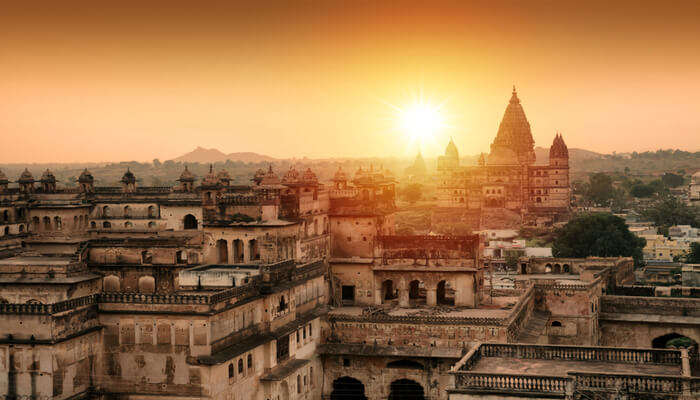
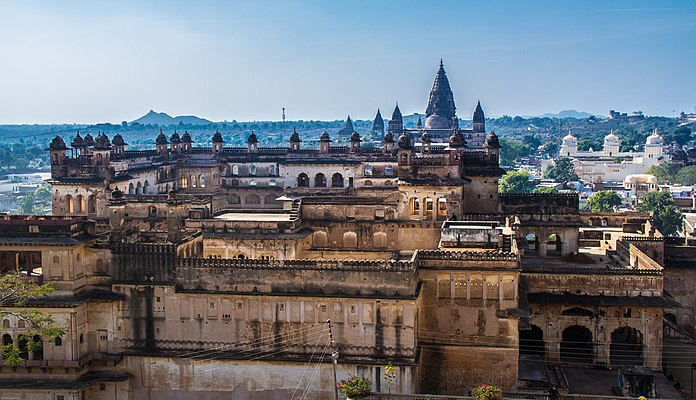
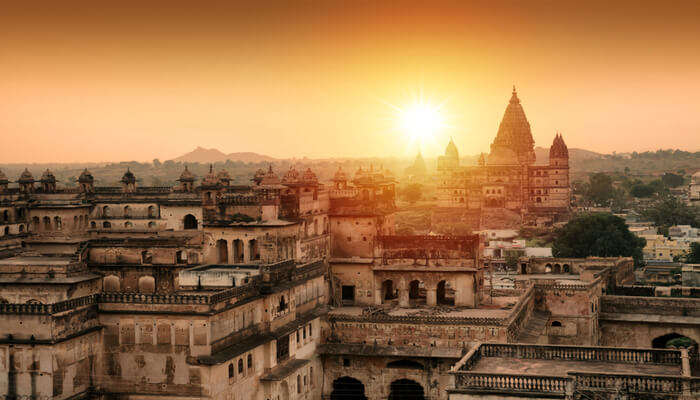
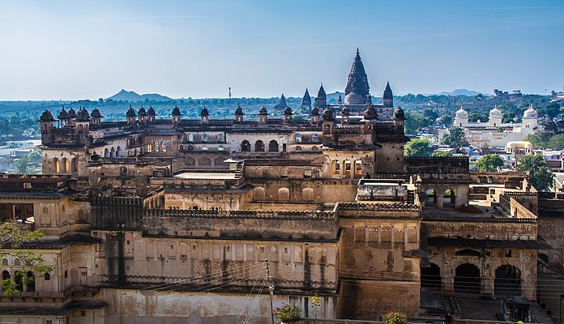

Orchha (or Urchha) is a town in Niwari district of Madhya Pradesh state, India. The town was established by Rudra Pratap Singh some time after 1501, as the seat of an eponymous former princely state of covering parts of central & north India, in the Bundelkhand region.[1] Orchha lies on the Betwa River, 80 km from Tikamgarh & 15 km from Jhansi in Uttar Pradesh

The Ram Raja Temple is built on a square base and has an almost entirely plain exterior, relieved by projecting windows and a line of delicate domes along the summit. The Jahangir Mahal is built on a rectangular base and is relieved by a circular tower at each corner surmounted by a dome, while two lines of graceful balconies supported on brackets mark the central storeys. The roof is crowned by eight large fluted domes, with smaller domes between them, connected by an ornamental balustrade. The Jahangir Mahal is considered to be a singularly beautiful specimen of Mughal architecture.[1] A point worth mentioning here is that the mother of Jahangir, Mariam-uz-Zamani, was a Rajput princess. It is with this in mind that the Rajput king of Orchha had built the Jahangir Mahal. There is a spectacular light and sound show in the evening hours in the Jahangir Mahal. The show displays the history of the city of Orchha and the Jahangir Mahal.[9] Chaturbhuj Temple is an old temple from the 9th century, and is noted for having one of the tallest Vimana among Hindu temples standing at 344 feet.
 



Click here to know more about Orchha